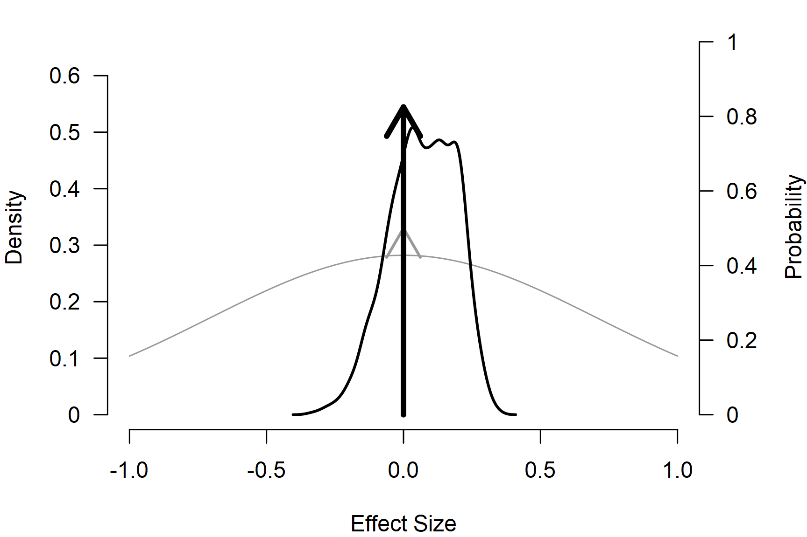

Robust Bayesian Meta-Analysis
František Bartoš
4th of May 2026
Source:vignettes/v21-robust-bayesian-meta-analysis.Rmd
v21-robust-bayesian-meta-analysis.RmdIn the Publication-Bias Adjustment vignette, we fit PET, PEESE, and a weight-function selection model on the ego-depletion dataset and obtained three different bias-corrected effect size estimates. The methods encoded different bias mechanisms: PET and PEESE corrected for the relationship between effect sizes and standard errors or sampling variances, and the selection model adjusted for publication bias operating on p-values. There is no consensus on which of the three is the right adjustment to apply. The Bayesian Model Averaging vignette highlighted how an analogous fixed-vs-random-effects question can be resolved by combining the candidate models in one ensemble and weighting them by their posterior model probabilities; the same idea applies here.
Robust Bayesian model-averaged meta-analysis (RoBMA) is the
application of that idea to publication-bias adjustment (Bartoš et al., 2023;
Maier et al., 2023). The
default RoBMA() ensemble averages over the presence vs
absence of an effect, the presence vs absence of heterogeneity, and a
no-bias spike against several weight-function and PET / PEESE bias
models in one fit. Inclusion Bayes factors quantify evidence for each of
the three components, and the model-averaged estimates propagate
uncertainty across the bias mechanisms instead of committing to a single
one.
In this vignette we fit the default RoBMA ensemble on the same
ego-depletion data used in the Publication-Bias
Adjustment vignette, walk through the summary, the marginal
posterior weights of the bias components, and the
interpret() shortcut. We list the available
model_type presets and close with a custom ensemble that
combines only the three single-model bias adjustments fit one at a time
in that vignette.
Dataset
The example dataset is dat.lehmann2018 from the
metadat package: 81 standardized mean differences from the
ego-depletion meta-analysis with effect sizes yi and
sampling variances vi already computed. For the matching
single-model bias adjustments and metafor package parity
calls, see the Publication-Bias
Adjustment vignette.
library("RoBMA")
data("dat.lehmann2018", package = "metadat")
dat <- dat.lehmann2018
head(dat[, c("Short_Title", "Year", "yi", "vi")])
#> Short_Title Year yi vi
#> 1 Roberts et al., 2010 - Exp 2 2010.1 0.3337773 0.049046910
#> 2 Roberts et al., 2010 - Exp 2 2010.1 0.4014099 0.016037663
#> 3 Wartenberg et al., 2011 - Exp 1 - In Group 2011.0 0.2036116 0.007916124
#> 4 Gilston & Privitera, 2016 - Exp 1 - Healthy 2016.0 1.9163675 0.037967265
#> 5 Roberts et al., 2010 - Exp 1 2010.1 0.1884325 0.023258447
#> 6 Roberts et al., 2010 - Exp 1 2010.1 0.1852130 0.005905064Default RoBMA Ensemble
RoBMA() with default arguments fits the RoBMA-PSMA
ensemble (Bartoš et
al., 2023): spike-and-slab prior distributions on the effect
and heterogeneity, and a 9-component bias mixture (no-bias spike, six
weight functions, PET, PEESE). The default prior distributions on
mu, tau, and the bias parameters match the
single-model fits in the Publication-Bias
Adjustment vignette.
fit_RoBMA <- RoBMA(
yi = yi, vi = vi, measure = "SMD",
data = dat, seed = 1
)
summary(fit_RoBMA)
#>
#> Robust Bayesian Model-Averaged Random-Effects Model (k = 81)
#>
#> Component Inclusion
#> Prior prob. Post. prob. Inclusion BF error%(Inclusion BF)
#> Effect 0.500 0.175 0.212 7.411
#> Heterogeneity 0.500 1.000 >14999.000 NA
#> Publication Bias 0.500 0.960 24.126 16.142
#>
#> Estimates
#> Mean SD 0.025 0.5 0.975 error(MCMC) error(MCMC)/SD ESS R-hat
#> mu 0.012 0.057 -0.064 0.000 0.203 0.00187 0.033 986 1.015
#> tau 0.305 0.041 0.229 0.303 0.391 0.00046 0.011 8238 1.000
#>
#> Publication Bias
#> Mean SD 0.025 0.5 0.975 error(MCMC) error(MCMC)/SD ESS R-hat
#> omega[0,0.025] 1.000 0.000 1.000 1.000 1.000 NA NA NA NA
#> omega[0.025,0.05] 0.990 0.064 0.871 1.000 1.000 0.00094 0.015 5753 1.015
#> omega[0.05,0.5] 0.978 0.109 0.508 1.000 1.000 0.00162 0.015 5103 1.004
#> omega[0.5,0.95] 0.971 0.140 0.315 1.000 1.000 0.00215 0.015 4842 1.002
#> omega[0.95,0.975] 0.971 0.140 0.315 1.000 1.000 0.00215 0.015 4848 1.002
#> omega[0.975,1] 0.971 0.140 0.315 1.000 1.000 0.00215 0.015 4848 1.002
#> PET 0.703 0.431 0.000 0.844 1.305 0.01067 0.025 1713 1.005
#> PEESE 0.370 0.920 0.000 0.000 3.074 0.01949 0.021 2352 1.001
#> P-value intervals for publication bias weights omega correspond to one-sided p-values.The Components table reports inclusion Bayes factors for the three components. Model-averaged estimates combine all 36 sub-models in the ensemble (effect heterogeneity bias) weighted by their posterior probabilities; we report the bias parameters only for the bias-adjusted sub-models.
summary_models() breaks the mixture prior distributions
of the three components down into their individual sub-models and
reports their prior weight, posterior weight, and individual inclusion
Bayes factor.
summary_models(fit_RoBMA)
#>
#> Effect
#> Hypothesis Prior prob. Post. prob. Inclusion BF error%(Inclusion BF)
#> Spike(0) Null 0.500 0.825 4.712 7.411
#> Normal(0, 0.71) Alternative 0.500 0.175 0.212 7.411
#>
#> Heterogeneity
#> Hypothesis Prior prob. Post. prob. Inclusion BF error%(Inclusion BF)
#> Spike(0) Null 0.500 0.000 0.000 NA
#> Normal(0, 0.35)[0, Inf] Alternative 0.500 1.000 Inf NA
#>
#> Publication Bias
#> Hypothesis Prior prob. Post. prob. Inclusion BF error%(Inclusion BF)
#> None Null 0.500 0.040 0.041 16.142
#> omega[two-sided: .05] Alternative 0.042 0.001 0.026 33.781
#> omega[two-sided: .05, .1] Alternative 0.042 0.000 0.005 57.747
#> omega[one-sided: .05] Alternative 0.042 0.004 0.095 17.724
#> omega[one-sided: .025, .05] Alternative 0.042 0.006 0.136 13.589
#> omega[one-sided: .05, .5] Alternative 0.042 0.009 0.220 10.720
#> omega[one-sided: .025, .05, .5] Alternative 0.042 0.025 0.578 9.286
#> PET Alternative 0.125 0.766 22.923 6.008
#> PEESE Alternative 0.125 0.149 1.224 6.237The posterior model weights show which sub-models the data prefer
within each component’s mixture. The bias side of the ensemble
concentrates posterior mass on PET (posterior probability
,
individual inclusion BF
)
with a smaller share on PEESE; the weight functions and the no-bias
spike all receive negligible posterior weight. The
inclusion BF column is the Bayes factor for that one
sub-model against the rest of its mixture, so it does not need to agree
with the component-level inclusion BF reported by
summary().
plot() overlays the prior and the model-averaged
posterior of any model parameter. On mu the spike at zero
(right-axis arrow) carries the posterior probability that the effect is
null and the slab carries the rest; the grey shapes are the
corresponding prior distribution.

interpret() distills the components and the pooled
estimates into prose. With scope = "all", the bias section
is included.
interpret(fit_RoBMA, scope = "all")
#> Robust Bayesian Model-Averaged Random-Effects Model (k = 81).
#> Effect inclusion: moderate evidence against the effect (BF01 = 4.712).
#> Heterogeneity inclusion: strong evidence in favor of heterogeneity (BFrf > 14999.000).
#> Publication Bias inclusion: strong evidence in favor of publication bias (BFpb = 24.126).
#> Pooled effect: model-averaged mean standardized mean difference = 0.012, 95% CrI [-0.064, 0.203].
#> Pooled heterogeneity: model-averaged mean tau = 0.305, 95% CrI [0.229, 0.391].
#> Publication-bias estimate (omega[0,0.025]): model-averaged mean omega[0,0.025] = 1.000, 95% CrI [1.000, 1.000].
#> Publication-bias estimate (omega[0.025,0.05]): model-averaged mean omega[0.025,0.05] = 0.990, 95% CrI [0.871, 1.000].
#> Publication-bias estimate (omega[0.05,0.5]): model-averaged mean omega[0.05,0.5] = 0.978, 95% CrI [0.508, 1.000].
#> Publication-bias estimate (omega[0.5,0.95]): model-averaged mean omega[0.5,0.95] = 0.971, 95% CrI [0.315, 1.000].
#> Publication-bias estimate (omega[0.95,0.975]): model-averaged mean omega[0.95,0.975] = 0.971, 95% CrI [0.315, 1.000].
#> Publication-bias estimate (omega[0.975,1]): model-averaged mean omega[0.975,1] = 0.971, 95% CrI [0.315, 1.000].
#> Publication-bias estimate (PET): model-averaged mean PET = 0.703, 95% CrI [0.000, 1.305].
#> Publication-bias estimate (PEESE): model-averaged mean PEESE = 0.370, 95% CrI [0.000, 3.074].Preset Ensembles
model_type selects a preset bias-model ensemble. Each
preset combines the no-bias spike with a different alternative set; the
prior weight on “any bias” is
in every preset.
model_type |
Alternative bias models |
|---|---|
"PSMA" |
6 weight functions, PET, PEESE (the default RoBMA-PSMA ensemble (Bartoš et al., 2023)) |
"PP" |
PET and PEESE only |
"6w" |
6 weight functions only (no PET / PEESE) |
"2w" |
2 two-sided weight functions only |
The PEESE scale is rescaled by
so the prior distribution describes a comparable bias on each
effect-size scale (the ratio is
for measure = "SMD"). Bias-adjustment prior distributions
are not affected by rescale_priors. Use
print_prior(fit, parameter = "bias") on a
RoBMA(..., only_priors = TRUE) fit to inspect the
alternative components and prior weights inside any preset:
fit_priors <- RoBMA(
yi = yi, vi = vi, measure = "SMD",
model_type = "PP",
data = dat, only_priors = TRUE
)
print_prior(fit_priors, parameter = "bias")
#> bias:
#> alternative:
#> (0.5/2) * PET ~ Cauchy(0, 1)[0, Inf]
#> (0.5/2) * PEESE ~ Cauchy(0, 5)[0, Inf]
#> null:
#> (1/2) * NoneCustom Bias Ensembles
Beyond the presets, we can specify the bias model space directly via
prior_bias. This is useful when the publication process
under study has a specific shape (for example, two-sided selection only
or a single weight-function step at a non-default cutoff), or for
sensitivity analyses against the preset choice.
The example below builds a 3-model bias ensemble out of the three
single-model bias adjustments from the Publication-Bias
Adjustment vignette (default bPET(), default
bPEESE(), and default bselmodel()), so the
ensemble averages over the same three bias mechanisms that vignette fit
one at a time, plus the no-bias spike.
fit_RoBMA_custom <- RoBMA(
yi = yi, vi = vi, measure = "SMD",
prior_bias = list(
prior_PET(
distribution = "Cauchy",
parameters = list(location = 0, scale = 1),
truncation = list(lower = 0, upper = Inf)
),
prior_PEESE(
distribution = "Cauchy",
parameters = list(location = 0, scale = 5),
truncation = list(lower = 0, upper = Inf)
),
prior_weightfunction(
"one-sided",
steps = c(0.025),
weights = wf_cumulative(c(1, 1))
)
),
data = dat, seed = 1
)
interpret(fit_RoBMA_custom, scope = c("components", "estimates"))
#> Robust Bayesian Model-Averaged Random-Effects Model (k = 81).
#> Effect inclusion: moderate evidence against the effect (BF01 = 4.894).
#> Heterogeneity inclusion: strong evidence in favor of heterogeneity (BFrf > 14999.000).
#> Publication Bias inclusion: strong evidence in favor of publication bias (BFpb = 22.189).
#> Pooled effect: model-averaged mean standardized mean difference = 0.009, 95% CrI [-0.076, 0.171].
#> Pooled heterogeneity: model-averaged mean tau = 0.304, 95% CrI [0.229, 0.392].The two ensembles agree on all three component inclusion conclusions:
strong evidence for heterogeneity, moderate evidence against the effect,
and strong evidence in favour of publication bias. The model-averaged
effect on mu is essentially zero in both fits with
overlapping credible intervals. The agreement reflects the bias-mixture
composition reported by summary_models() above: the default
ensemble already concentrates posterior weight on PET, so dropping the
weight functions that received negligible weight does not move the
model-averaged inference.
The prior probability of any bias is
in the custom fit and
in the default, because the three user-supplied alternative prior
distributions all default to prior_weights = 1 against the
no-bias spike’s weight of
.
The component inclusion Bayes factor is invariant to this asymmetry;
pass prior_weights explicitly on each prior in
prior_bias to match a different prior odds split.
Other Inference Helpers
RoBMA() returns an object of class
c("RoBMA", "brma"), so all summary(),
plot(), predict(), funnel(),
marginal_means(), rstudent(),
qqnorm(), and influence() methods documented
in the Bayesian
Meta-Analysis vignette work the same way. For single-model bias
adjustment without averaging see the Publication-Bias
Adjustment vignette; for the model-averaged workflow without
publication-bias adjustment see Bayesian Model
Averaging; the prior distributions on mu,
tau, and the moderators are documented in Prior
Distributions.